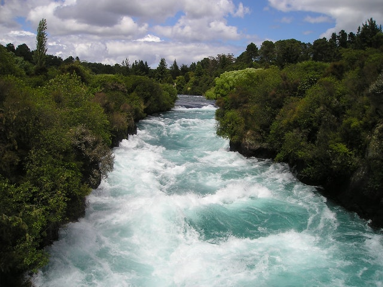
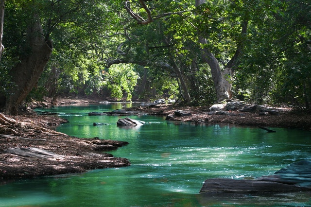
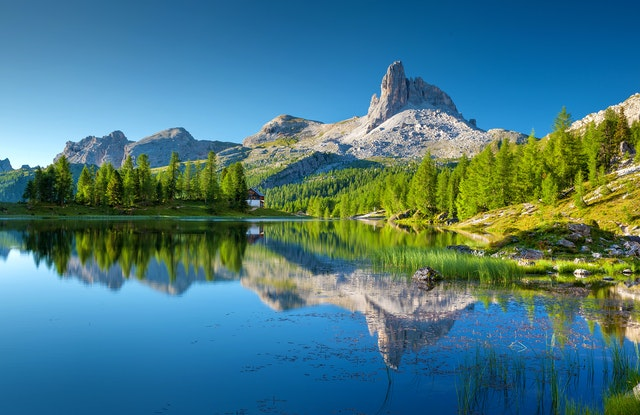
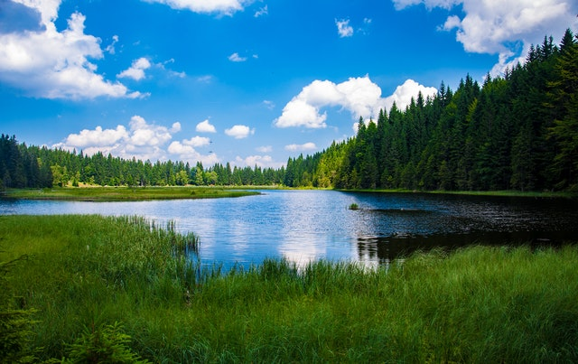

Freshwater Rivers
River Clare

The River Clare (Irish: Abhainn an Chláir) is a river in counties Mayo and Galway in Ireland.
The river rises north of Ballyhaunis in Mayo and descends past Dunmore,
where it flows west, then turns south past Milltown continuing down through Kilbennan Church near Tuam.
The river is 93 kilometres (58 miles) long in total.
River Moy

The Moy rises at the foot of the Ox Mountains in County Sligo. It flows for 110 kilometres (68 miles).
For the greater part of its length, it flows southwestward, entering County Mayo and passing near
Swinford before passing through Foxford then turning north near the village of Kilmore and heading for
the town of Ballina, where it enters the Atlantic Ocean at Killala Bay.
River Boyne

The River Boyne (Irish: An Bhóinn or Abhainn na Bóinne) is a river in Leinster, Ireland, the course of
which is about 112 kilometres (70 miles) long. It rises at Trinity Well, Newberry Hall, near Carbury, County
Kildare, and flows towards the Northeast through County Meath to reach the Irish Sea between Mornington,
County Meath, and Baltray, County Louth.
Freshwater Lakes
Lough Currane

Lough Currane, also called Lough Leeagh, is a lake in County Kerry,
Ireland. Waterville lies on its western bank, close to the Atlantic Ocean, it empties into
Ballinskelligs Bay, and Raheen lies on its southern bank. It covers an area of 2,500 acres (10 km2)
and is 3.5 miles (5.6 km) long and 2 miles (3.2 km) at its widest point.
Lough Mask

Lough Mask is a limestone lake of about 83 km2 (32 sq mi) in Counties
Galway and Mayo, Ireland, north of Lough Corrib. Lough Mask is the middle of the three lakes, which empty into the Corrib River, through Galway, into Galway Bay. Lough
Carra flows into Lough Mask, which feeds into Lough Corrib through an underground stream which becomes the River Cong.
Lough Carra

Lough Carra is a limestone lake of 4,000 acres (16 km2), in County Mayo, Ireland,
about 8 miles (13 km) south of Castlebar. It is approximately 6 miles (9.7 km) long and varies in width from 400 yards
(370 m) to one mile (1.6 km). The average depth is 6 feet (1.8 m), with a maximum depth of 60 feet. It drains into Lough Mask
via the Keel River.